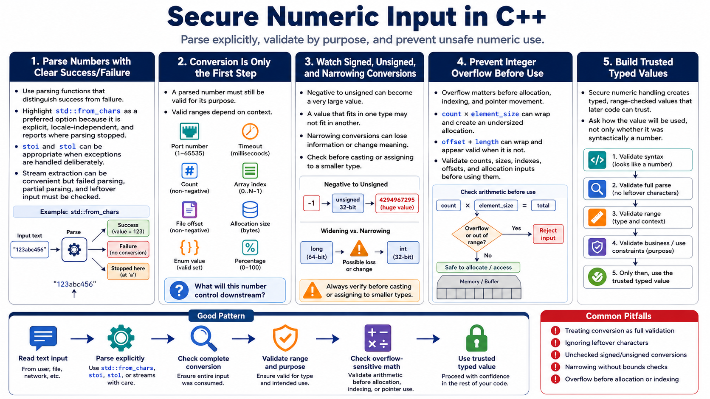

Numeric Conversion and Range Validation
Connecting to LMS... Progress: in progress

Narration
Numbers from input should be parsed with functions that let the program distinguish success from failure. std::from_chars is useful because it is explicit, locale-independent, and reports where parsing stopped. Functions such as stoi and stol can be appropriate when exceptions are handled deliberately, but they should not be treated as magic validation. Stream extraction has its own pitfalls because failed parsing, partial parsing, and leftover input must be checked.
Conversion is only the first step. The converted value must be valid for its purpose. A port number, timeout, count, array index, file offset, allocation size, enum value, and percentage all have different allowed ranges. Signed and unsigned conversions deserve special attention. A negative value converted to an unsigned type can become a very large number. A value that fits in one type may not fit in another. Narrowing conversions can lose information or change meaning if they are not checked first.
Integer overflow matters before allocation, indexing, and pointer movement. A count multiplied by an element size can wrap and produce a smaller allocation than later code expects. An offset plus a length can wrap and appear to be within a buffer. Validate counts, sizes, indexes, offsets, and allocation inputs before use. Ask how the value will be used downstream, not only whether it was syntactically a number. Secure numeric handling creates typed, range-checked values that later code can trust.